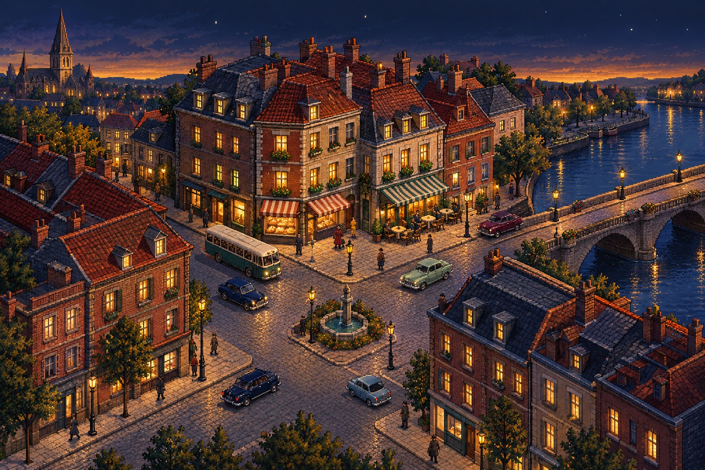
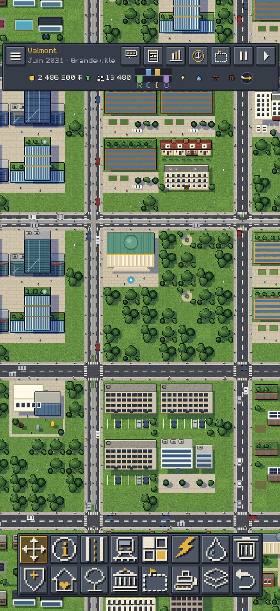
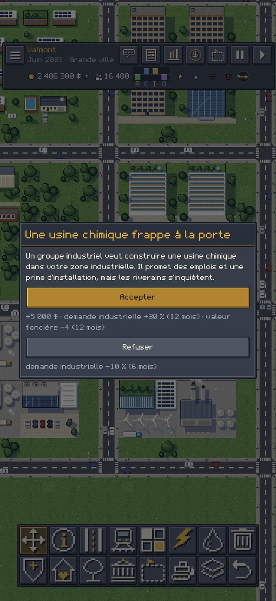
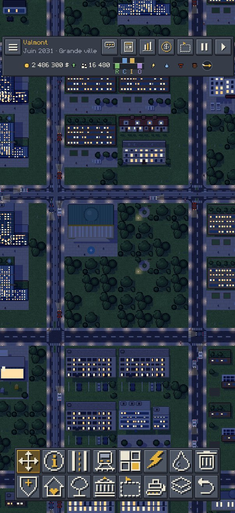
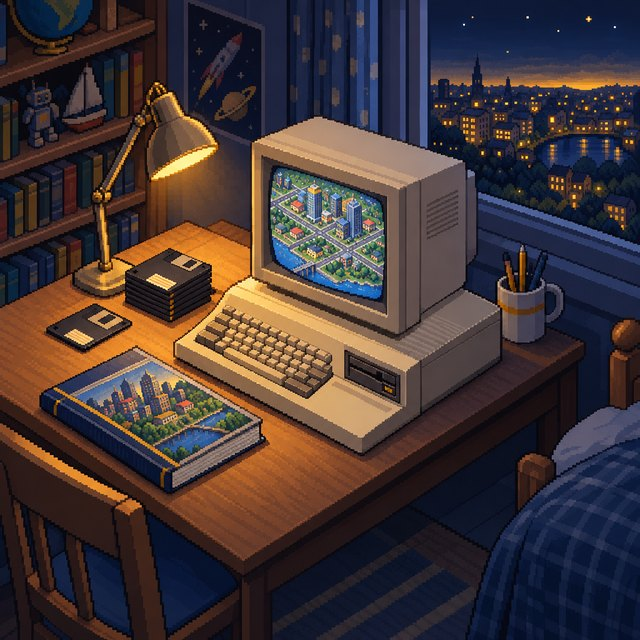

Un carrefour, quatre époques
Le même carrefour en 1950, 1975, 2000 et 2025. Dans le jeu, chaque bâtiment garde le style de son année de construction.

Pas de pièges
Gratuit pour de vrai. Le jeu est fait pour qu'on y joue, pas pour vous faire payer.
- Pas de pubJamais de vidéo à regarder, jamais de bannière.
- Pas de chronoPas d'énergie à recharger ni de chantier qui dure des heures.
- Pas d'achatsRien à payer pour aller plus vite : tout le jeu est là.
- Pas de collecteAucune donnée envoyée. Votre ville reste chez vous.
Une vraie ville dans la poche
Tout se joue au doigt, en portrait comme en paysage.

Tracez, zonez, regardez pousser
Rues, avenues, tram, électricité, eau et égouts : les quartiers se densifient si vous les servez bien.

Tranchez en maire
Une usine chimique, une grève, un festival : chaque choix a un prix et des conséquences visibles dans la ville.

Jour, nuit et saisons
Les fenêtres s'allument le soir, la neige tombe en hiver, le vent pousse les fumées des usines.
- Quartiers et politiquesImpôts locaux, zones piétonnes, spécialisations touristiques ou high-tech.
- Pollution et climatAir, eau, sols, bruit et bilan carbone, avec le vent qui compte.
- Villes voisinesVendez votre électricité, achetez de l'eau, échangez vos déchets.
- 20 succès Game CenterDe la première maison à la mégapole de 2050.
- Vos parties partoutSauvegardes iCloud entre iPhone et iPad, trois emplacements.
- Français et anglaisTutoriel guidé, bac à sable, scénarios et mode photo.

Pourquoi Metropix
J'avais huit ans et un Amiga 500. J'ai passé des soirées entières sur SimCity à gérer ma ville : ses habitants, leurs besoins, les quartiers qui grandissent ou qui se vident.
Et puis un jour, j'ai perdu le livret du jeu. Sans lui, impossible de lancer une partie : il fallait taper un mot de passe imprimé dedans, c'était la protection contre la copie. Fin de l'histoire.
Trente ans plus tard, j'ai cherché ce jeu-là sur mon téléphone : le style d'avant, mais avec tout ce qu'un jeu de ville sait faire aujourd'hui. Je ne l'ai pas trouvé, alors je l'ai fait.
Kenny, 40 ans, créateur de Metropix
Promis, ici, pas de mot de passe à taper.
Assistance
- Une question, un bug, une idée ?
- contact@webplayground.fr
- Ma partie est-elle sauvegardée ?
- Oui, automatiquement chaque année de jeu et à la fermeture. Sur iPhone et iPad, elle suit aussi votre compte iCloud.
- Faut-il une connexion Internet ?
- Non, le jeu fonctionne entièrement hors connexion.